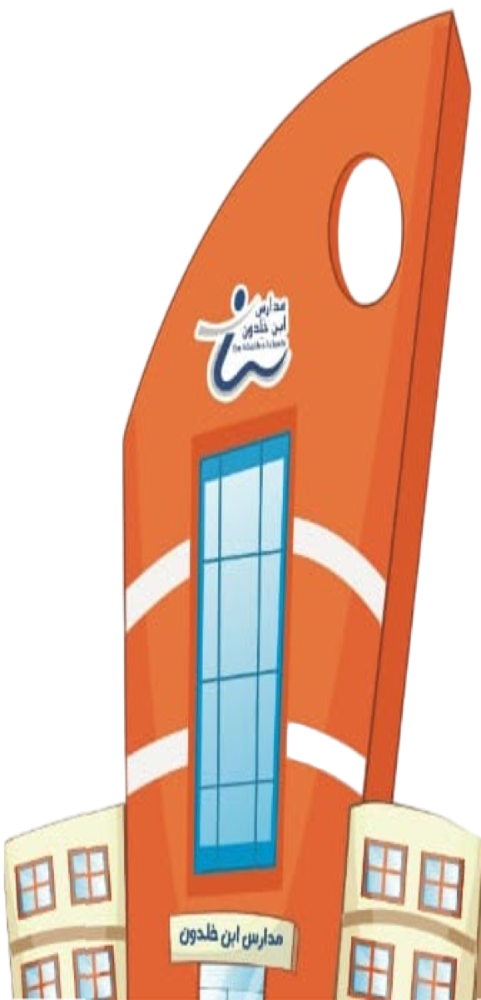

مدارس ابن خلدون · السجلات والشواهد للتقويم الخارجي

الاعتماد الخارجي
مدارس ابن خلدون الأهلية
شركة معارف للتعليم — رابطٌ واحد لكل المدارس
إلى أي مدرسة تنتمي؟
اختر مجمعك ثم مسارك ثم مرحلتك، فتصل إلى مساحة مدرستك. تختارها مرّة واحدة فقط ثم يتذكّرها المتصفّح.
🗂️ لوحة إدارة المنصّة
لمدير الجودة والتخطيط — متابعة الأربعين مدرسة واعتماد بيانات منسوبيها
الاتصال بمساحة مدرستك
اختر مجلد «الاعتماد الخارجي» الذي شاركه معك مدير المدرسة على OneDrive. تختاره مرّة واحدة فقط، ثم يتذكّره المتصفّح.
الأجهزة المدعومة
✅ يحفظ في مجلد مدرستك
- حاسب ويندوز — Google Chrome أو Microsoft Edge
- حاسب ماك — Google Chrome أو Microsoft Edge
بلا حساب ولا تسجيل دخول، ويعمل بلا إنترنت،
ولا يحتاج OneDrive — أي مجلد على القرص يكفي.
⛔ لا يحفظ — قيدٌ من الشركات المصنّعة
- آيفون وآيباد — كل المتصفّحات، ومنها كروم
متصفّحات iOS كلها تعمل بمحرّك سفاري نفسه - سفاري على الماك
- جوّالات أندرويد
البديل: حقيبة عمل — يجهّزها لك مستودع المدرسة
فتعمل عليها بلا حساب ثم تُعيد إدخالاتك. اقرأ «كيف تعمل على الموقع» بعد الدخول.
⚠️ حين يسأل المتصفّح «Edit files?» اختر
«Save changes» — و«View only» يجعل كل شيء يبدو عاملًا ولا يُحفظ حرف.
كيف تعمل على الموقع
ثلاث طرق. اقرأها واختر ما يناسب جهازك — فتعرف تمامًا أين تُحفظ ملفاتك وبأي اسم.
لوحتي
أقرب سجلاتك تعبئةً
سجلاتي
أدوات دورة التقويم الذاتي
التجميع على مؤشرات ETEC
الخطة التحسينية
المؤشرات مرتّبة من الأدنى — التقويم الخارجي مقابل تقويمنا الذاتي
إجراءات التحسين — لكل مؤشر دون المستوى
مرآة الخطة التحسينية — توزيع الإجراءات على الأسابيع
لا تحمل إلا ما يخصّ التحسين. الفصل الأول 1–19 والثاني 20–38.
البرامج التحسينية المعتمدة (نافِس)
جاهزية الزيارة
أبعاد الجاهزية — وما بُنيت عليه
حالة المؤشرات — ما يفتحه الزائر
مرتّبة من الأدنى درجةً في التقويم الخارجي.
خطتي التنفيذية
مهامك الأسبوعية مأخوذة من خطة مدرستك.
عدّل ما تشاء وأضف مهامك، وسجّل التنفيذ أسبوعًا بأسبوع — ويُحفظ في مجلدك.
مستودع المدرسة
أمين المستودع
تتجمّع عنده نسخة من كل ما يُدخِله التنفيذيون،
فلو حُذف مجلد أحدهم أو استقال قبل التسليم تبقى النسخة كاملة.
نسخة كاملة تشمل الشواهد
النسخ التلقائي يشمل الإدخالات فقط لخفّتها.
هذا الأمر ينسخ كذلك ملفات الشواهد الثنائية.
نسخة للطباعة
الإدخالات تُحفظ ملفّات بيانات تُقرأ بالموقع.
هذا الأمر يُخرج منها صفحات جاهزة للطباعة بالكليشة في مجلد للطباعة،
تُفتح من مجلد المدرسة على حاسبك وتُطبع بـ Ctrl+P — بلا الموقع وبلا إنترنت.
حقائب العمل — لمن يعمل من الجوّال
جهّز حقيبة باسم التنفيذي وأرسلها له بالواتساب.
يعمل عليها بلا حساب ولا إنترنت، ثم يعيد إليك إدخالاته.
استلام إدخالات التنفيذيين
من ملفٍّ وصلك بالواتساب، أو سحبًا من نقطة
الاستقبال إن فُعِّلت. تُكتب في مواضعها تمامًا كما لو عبّأها صاحبها بنفسه.
نقطة الاستقبال — ضبط لمرّة واحدة
Worker مجاني على حسابك في Cloudflare —
بلا بطاقة وبلا تقنية معلومات. الخطوات في ملف cloudflare-worker.js.
آخر ما نُسخ
الخطط والنتائج
الخطة التشغيلية للمدرسة وخطتك التنفيذية — نسخ PDF معتمدة.